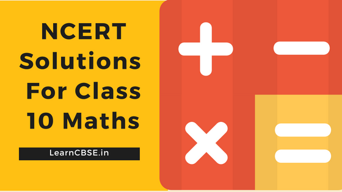

NCERT Solutions for Class 10 Maths are solved by experts of LearnCBSE.in in order to help students to obtain excellent marks in their board examination. All the questions and answers that are present in the CBSE NCERT Books has been included in this page. We have provided all the Class 10 Maths NCERT Solutions with a detailed explanation i.e., we have solved all the question with step by step solutions in understandable language. So students having great knowledge over NCERT Solutions Class 10 Maths can easily make a grade in their board exams. Read on to find out more about NCERT Solutions for Class 10 Mathematics. You can also practice Extra Questions for Class 10 Maths on LearnCBSE.in
CBSE NCERT Solutions for Class 10 Maths in PDF in Hindi Medium (हिंदी मीडियम) as well as English Medium session 2019-20 for CBSE, UP Board, Gujrat Board, MP Board, Bihar, AP SSC, TS SSC, Uttarakhand board and all other boards following new CBSE Curriculum.
NCERT Solutions for Class 10 Maths
In this page, each and every question originate with a step-wise solution. Working on NCERT Solutions for Class 10 will help students to get an idea about how to solve the problems. With the help of these NCERT Solutions for Class 10 Maths you can easily grasp basic concepts better and faster. Moreover, it is a perfect guide to help you to score good marks in CBSE board examination. Just click on the chapter wise links given below to practice the NCERT Solutions for the respective chapter.
- Chapter 1 Real Numbers
- Chapter 2 Polynomials
- Chapter 3 Pair of Linear Equations in Two Variables
- Chapter 4 Quadratic Equations
- Chapter 5 Arithmetic Progressions
- Chapter 6 Triangles
- Chapter 7 Coordinate Geometry
- Chapter 8 Introduction to Trigonometry
- Chapter 9 Applications of Trigonometry
- Chapter 10 Circle
- Chapter 11 Constructions
- Chapter 12 Areas related to Circles
- Chapter 13 Surface Areas and Volumes
- Chapter 14 Statistics
- Chapter 15 Probability
With the aim of imbibing skills and hard work among the students, the 10th class maths NCERT solutions have been designed. It contains previous years’ questions along with answers except those which are not included in the CBSE 10 maths syllabus.
CBSE NCERT solutions for class 10 maths will help the students in acquiring adequate practice to do their CBSE Class 10th exam with confidence.
NCERT Solutions for Class 10 Maths Chapter 1 Real Numbers
Real Numbers Class 10 has total of four exercises consists of 18 Problems. Prove Irrational, Problems based on Euclid’s division lemma, HCF and LCM and Divisibility are mostly asked topics in previous board exams. Other topics included are Fundamental Theorem of Arithmetic, important properties of positive integers, fraction to decimals and decimals to a fraction.
- Class 10 Maths Real Numbers Ex 1.1
- प्रश्नावली 1.1 का हल हिंदी में वास्तविक संख्याएँ
- Class 10 Maths Real Numbers Ex 1.2
- प्रश्नावली 1.2 का हल हिंदी में वास्तविक संख्याएँ
- Class 10 Maths Real Numbers Ex 1.3
- प्रश्नावली 1.3 का हल हिंदी में वास्तविक संख्याएँ
- Class 10 Maths Real Numbers Ex 1.4
- प्रश्नावली 1.4 का हल हिंदी में वास्तविक संख्याएँ
- Real Numbers Class 10 Extra Questions
- Real Numbers Class 10 Important Questions
- Real Numbers Class 10 Notes

NCERT Solutions for Class 10 Maths Chapter 2 Polynomials
Polynomials Class 10 has total of four exercises consists of 13 Questions. Problems related to finding polynomials, Properties zeros and coefficient, long division of polynomials, finding a quadratic polynomial, finding zeros of polynomials are scoring topics.
- Class 10 Maths Polynomials Ex 2.1
- प्रश्नावली 2.1 का हल हिंदी में
- Class 10 Maths Polynomials Ex 2.2
- प्रश्नावली 2.2 का हल हिंदी में
- Class 10 Maths Polynomials Ex 2.3
- प्रश्नावली 2.3 का हल हिंदी में
- Class 10 Maths Polynomials Ex 2.4
- प्रश्नावली 2.4 का हल हिंदी में
- Polynomials Class 10 Extra Questions
- Polynomials Class 10 Important Questions
- Polynomials Class 10 Notes
NCERT Solutions for Class 10 Maths Chapter 3 Pair of Linear Equations in Two Variables
Pair of Linear Equations Class 10 has total of seven exercises consists of 55 Problems. The problems will be based on concepts like linear equations in two variables, algebraic methods for solving linear equations, elimination method, cross-multiplication method Time and Work, Age, Boat Stream and equations reducible to a pair of linear equations these answers will give you ease in solving problems related to linear equations.
- Pair Of Linear Equations In Two Variables Class 10 Ex 3.1
- प्रश्नावली 3.1 का हल हिंदी में
- Pair Of Linear Equations In Two Variables Class 10 Ex 3.2
- प्रश्नावली 3.2 का हल हिंदी में
- Pair Of Linear Equations In Two Variables Class 10 Ex 3.3
- प्रश्नावली 3.3 का हल हिंदी में
- Pair Of Linear Equations In Two Variables Class 10 Ex 3.4
- प्रश्नावली 3.4 का हल हिंदी में
- Pair Of Linear Equations In Two Variables Class 10 Ex 3.5
- प्रश्नावली 3.5 का हल हिंदी में
- Pair Of Linear Equations In Two Variables Class 10 Ex 3.6
- प्रश्नावली 3.6 का हल हिंदी में
- Pair Of Linear Equations In Two Variables Class 10 Ex 3.7
- प्रश्नावली 3.7 का हल हिंदी में
- Extra Questions for Class 10 Maths Linear Equations in Two Variables
- Pair of Linear Equations in Two Variables Class 10 Important Questions
- Pair of Linear equations in Two Variables Class 10 Notes
NCERT Solutions for Class 10 Maths Chapter 4 Quadratic Equations
Quadratic Equations Class 10 has total of four exercises consists of 24 Problems. The Questions are related to find roots of quadratic equations and convert world problem into quadratic equations are easily scoring topics in board exams.
- Class 10 Maths Quadratic Equations Ex 4.1
- प्रश्नावली 4.1 का हल हिंदी में
- Class 10 Maths Quadratic Equations Ex 4.2
- प्रश्नावली 4.2 का हल हिंदी में
- Class 10 Maths Quadratic Equations Ex 4.3
- प्रश्नावली 4.3 का हल हिंदी में
- Class 10 Maths Quadratic Equations Ex 4.4
- प्रश्नावली 4.4 का हल हिंदी में
- Quadratic Equations Class 10 Extra Questions
- Quadratic Equations Class 10 Important Questions
- Quadratic Equations Class 10 Notes
NCERT Solutions for Class 10 Maths Chapter 5 Arithmetic Progressions
Arithmetic Progressions Class 10 has total of four exercises consists of 49 Problems. find the nth terms and the sum of n consecutive terms are important topics in this chapter 5.
- Class 10 Maths Arithmetic Progressions Ex 5.1
- प्रश्नावली 5.1 का हल हिंदी में
- Class 10 Maths Arithmetic Progressions Ex 5.2
- प्रश्नावली 5.2 का हल हिंदी में
- Class 10 Maths Arithmetic Progressions Ex 5.3
- प्रश्नावली 5.3 का हल हिंदी में
- Class 10 Maths Arithmetic Progressions Ex 5.4
- प्रश्नावली 5.4 का हल हिंदी में
- Arithmetic Progressions Class 10 Extra Questions
- Arithmetic Progressions Class 10 Important Questions
- Arithmetic Progressions Class 10 Notes
NCERT Solutions for Class 10 Maths Chapter 6 Triangles
Triangles Class 10 has total of six exercises consists of 64 Problems. The Questions are based on properties of triangles and 9 important theorems which are important in scoring good marks in CBSE Class 10 Exams.
- Triangles Class 10 Mind Map
- Triangles Class 10 Ex 6.1
- Triangles Class 10 Ex 6.1 in Hindi Medium
- Triangles Class 10 Ex 6.2
- Triangles Class 10 Ex 6.2 in Hindi Medium
- Triangles Class 10 Ex 6.3
- Triangles Class 10 Ex 6.3 in Hindi Medium
- Triangles Class 10 Ex 6.4
- Triangles Class 10 Ex 6.4 in Hindi Medium
- Triangles Class 10 Ex 6.5
- Triangles Class 10 Ex 6.5 in Hindi Medium
- Triangles Class 10 Ex 6.6
- Triangles Class 10 Ex 6.6 in Hindi Medium
- Extra Questions for Class 10 Maths Triangles
- Triangles Class 10 Notes Maths Chapter 6
- NCERT Exemplar Class 10 Maths Chapter 6 Triangles
- Important Questions for Class 10 Maths Chapter 6 Triangles
- Triangles Class 10 Notes
NCERT Solutions for Class 10 Maths Chapter 7 Coordinate Geometry
Coordinate Geometry Class 10 has total of four exercises consists of 33 Problems. The Questions related to finding the distance between two points using their coordinates, Area of Triangle, Line divided in Ratio (Section Formula) are important models in class 10 boards.
- Class 10 Maths Coordinate Geometry Ex 7.1
- प्रश्नावली 7.1 का हल हिंदी में
- Class 10 Maths Coordinate Geometry Ex 7.2
- प्रश्नावली 7.2 का हल हिंदी में
- Class 10 Maths Coordinate Geometry Ex 7.3
- प्रश्नावली 7.3 का हल हिंदी में
- Class 10 Maths Coordinate Geometry Ex 7.4
- प्रश्नावली 7.4 का हल हिंदी में
- Coordinate Geometry Class 10 Extra Questions
- Coordinate Geometry Class 10 Important Questions
- Coordinate Geometry Class 10 Notes
NCERT Solutions for Class 10 Maths Chapter 8 Introduction to Trigonometry
Introduction to Trigonometry Class 10 has total of four exercises consists of 27 Problems. The questions based on trigonometric ratios of specific angles, trigonometric identities and trigonometric ratios of complementary angles are the main topics you will learn in this chapter. Trigonometry Formulas plays important role in getting 100% marks in Board Exams.
- Class 10 Maths Introduction to Trigonometry Ex 8.1
- प्रश्नावली 8.1 का हल हिंदी में
- Introduction to Trigonometry Class 10 Ex 8.2
- प्रश्नावली 8.2 का हल हिंदी में
- Introduction to Trigonometry Class 10 Ex 8.3
- प्रश्नावली 8.3 का हल हिंदी में
- Introduction to Trigonometry Class 10 Ex 8.4
- प्रश्नावली 8.4 का हल हिंदी में
- Introduction to Trigonometry Class 10 Extra Questions
- Introduction to Trigonometry Class 10 Important Questions
- Introduction to Trigonometry Class 10 Notes
NCERT Solutions for Class 10 Maths Chapter 9 Some Applications of Trigonometry
Some Applications of Trigonometry Class 10 has one exercise consists of 16 Problems. In this chapter, you will be studying about real life applications of trigonometry and questions are based on the practical applications of trigonometry.
- Some Applications of Trigonometry Class 10 Ex 9.1
- प्रश्नावली 9.1 का हल हिंदी में
- Applications of Trigonometry Class 10 Extra Questions
- Some Applications of Trigonometry Class 10 Important Questions
- Some Applications of Trigonometry Class 10 Notes
NCERT Solutions for Class 10 Maths Chapter 10 Circles
Circle Class 10 has total of two exercises consists of 17 Problems. Understand concepts such as tangent, secant, number tangents from a point to a circle and more.
- Circles Class 10 Ex 10.1
- प्रश्नावली 10.1 का हल हिंदी में
- Circles Class 10 Ex 10.2
- प्रश्नावली 10.2 का हल हिंदी में
- Circles Class 10 Extra Questions
- Circles Class 10 Important Questions
- Circles Class 10 Notes
NCERT Solutions for Class 10 Maths Chapter 11 Constructions
Constructions Class 10 has total of four exercises consists of 14 Problems. The Questions are based on drawing tangents and draw similar triangles are important topics.
- Constructions Class 10 Ex 11.1
- प्रश्नावली 11.1 का हल हिंदी में
- Constructions Class 10 Ex 11.2
- प्रश्नावली 11.2 का हल हिंदी में
- Extra Questions for Class 10 Maths Constructions
- Constructions Class 10 Important Questions
- Constructions Class 10 Notes
NCERT Solutions for Class 10 Maths Chapter 12 Areas Related to Circles
Areas Related to Circles Class 10 has total of three exercises consists of 35 Problems. Solve problems related to ‘Perimeter and Area of a Circle’, ‘Areas of Combinations of Plane Figures’ and ‘Areas of Sector and Segment of a Circle’.
- Areas Related to Circles Class 10 Ex 12.1
- प्रश्नावली 12.1 का हल हिंदी में
- Areas Related to Circles Class 10 Ex 12.2
- प्रश्नावली 12.2 का हल हिंदी में
- Areas Related to Circles Class 10 Ex 12.3
- प्रश्नावली 12.3 का हल हिंदी में
- Areas Related to Circles Class 10 Extra Questions
- Areas Related to Circles Class 10 Important Questions
- Areas related to Circles Class 10 Notes
NCERT Solutions for Class 10 Maths Chapter 13 Surface Areas and Volumes
Surface Areas and Volumes Class 10 has total of five exercises consists of 36 Problems. In CBSE class 10 Maths, the ‘Surface Areas and Volumes’ chapter is a part of mensuration unit. The problems are based on finding areas and volumes of different solids such as cube, cuboid and cylinder, frustum, combination of solids.
- Surface Areas and Volumes Class 10 Ex 13.1
- प्रश्नावली 13.1 का हल हिंदी में
- Surface Areas and Volumes Class 10 Ex 13.2
- प्रश्नावली 13.2 का हल हिंदी में
- Surface Areas and Volumes Class 10 Ex 13.3
- प्रश्नावली 13.3 का हल हिंदी में
- Surface Areas and Volumes Class 10 Ex 13.4
- प्रश्नावली 13.4 का हल हिंदी में
- Surface Areas and Volumes Class 10 Ex 13.5
- प्रश्नावली 13.5 का हल हिंदी में
- Surface Areas and Volumes Class 10 Extra Questions
- Surface Areas and Volumes Class 10 Important Questions
- Surface Areas and Volumes Class 10 Notes
NCERT Solutions for Class 10 Maths Chapter 14 Statistics
Statistics Class 10 has total of four exercises consists of 25 Problems. Problems related to find mean, mode or median of grouped data will be studied in this chapter. Solve questions by understanding the concept of cumulative frequency distribution.
- Statistics Class 10 Ex 14.1
- प्रश्नावली 14.1 का हल हिंदी में
- Statistics Class 10 Ex 14.2
- प्रश्नावली 14.2 का हल हिंदी में
- Statistics Class 10 Ex 14.3
- प्रश्नावली 14.3 का हल हिंदी में
- Statistics Class 10 Ex 14.4
- प्रश्नावली 14.4 का हल हिंदी में
- Statistics Class 10 Extra Questions
- Statistics Class 10 Important Questions
- Statistics Class 10 Notes
NCERT Solutions for Class 10 Maths Chapter 15 Probability
Probability Class 10 has total of two exercises consists of 30 Problems. Questions based on the concept of theoretical probability will be studied in this chapter.
- Probability Class 10 Ex 15.1
- प्रश्नावली 15.1 का हल हिंदी में
- Probability Class 10 Ex 15.2
- प्रश्नावली 15.2 का हल हिंदी में
- Probability Class 10 Extra Questions
- Probability Class 10 Important Questions
- Probability Class 10 Notes
Maths NCERT Solutions Maths Formulas for Class 10
Advantages of Solving NCERT Solutions for Class 10 Maths From LearnCBSE.in

- All the Class 10 Maths NCERT Solutions provided in this page are clear and concise in nature.
- NCERT Solutions for Class 10 Mathematics are solved in easily understandable language to help students to grasp everything on the go.
- Accessible to everyone at any time anywhere without any difficulty.
- All the questions are solved strictly based on the NCERT (CBSE) Syllabus and Books. So mastering these solutions will definitely help students to score good marks in the examination.
- NCERT Solutions for Class 10 Maths PDF given in this page are of free of cost.
CBSE Class 10 Maths Unit-wise Weightage 2019-2020.
| UNIT No | Name of the Unit | Scoring Marks |
| 1 | Number Systems | 6 |
| 2 | Algebra | 20 |
| 3 | Coordinate Geometry | 6 |
| 4 | Geometry | 15 |
| 5 | Trigonometry | 12 |
| 6 | Mensuration | 10 |
| 7 | Statistics and Probability | 11 |
| Total | 80 |
FAQs for NCERT Solutions for Class 10 Maths
How to master in Class 10 Maths CBSE?
Students who are seeking for tips and tricks to master in class 10 maths, can go for the latest NCERT Class 10 Maths Solutions Books and prepare effectively. Just referring to the CBSE NCERT Solutions is enough to master in Class 10 Maths.
How do I solve Class 10 Mathematics problems easily?
If you prepare the latest CBSE Class 10 Maths Syllabus with the help of NCERT Solutions Pdf for Maths, then you can solve any type of problems in the final board examination.
Where can I download CBSE Class 10 NCERT Mathematics PDF Solutions?
You can quickly get Class 10 Mathematics NCERT Solutions Pdf from our page to access. So, make use of the available quick links over here and download CBSE Class 10 NCERT Solutions PDF for Maths, it helps you to prepare at your required time & easily understand the concepts of Class 10 Maths.
How these NCERT Solutions for class 10 Maths will be beneficial for CBSE Students?
Here are the few benefits of NCERT Solutions for Class 10 mathematics:
- It helps you to build a strong base of maths and increase confidence to face all boards and competitive exams in the future.
- With Class Maths NCERT Solutions, you can easily perceive and learn the steps to resolve some tough kind of problems.
- Moreover, it is a perfect guide to complete your homework and aid you to score better marks in the CBSE board examinations.
What are the concepts explained in the solutions of NCERT Class 10 Maths Textbook?
NCERT Maths Solutions assists all CBSE Class 10 Students in offering some helpful tricks and tips to solve math problems at the end of each chapter. Class 10 maths is having 15 chapters to learn by the students in this academic year. All 15 chapters included in CBSE Class 10 Maths NCERT Solutions PDF are explained by subject experts. So, get the NCERT Class 10 Mathematics Solutions Pdf from our page and check out the list of 15 chapters contained in the syllabus.
How to use NCERT Solutions for scoring in class 10 maths CBSE Board Exams?
- First of all, download the NCERT Solutions for Class 10 Maths Pdf which are designed by subject experts as per the latest CBSE Maths Syllabus curriculum 2020.
- Then, Go to the chapter that you wish to learn.
- Tap on the link provided for that particular chapter of class 10 maths.
- Now, it will open the chapter page with solutions of NCERT class 10 maths.
- Check the solved and unsolved questions and solutions presented in the NCERT class 10 maths & score the highest marks in the exam.
Why NCERT solutions for class 10 maths are important?
NCERT Solutions are designed in a way that every student can quickly understand the concept into their minds and clarifies all their doubts within a few seconds. The book is self-explanatory and helps students to innovate and explore in maths. Also, aspirants can assess their learning abilities with the solutions of NCERT Maths Books for their Class 10 board exam preparation.
Which book is best for Class 10 maths?
As per the survey conducted by educational analysts, around 78% of CBSE Class 10 students prefers NCERT Textbook solutions for their maths exams.
Which guide is best for Class 10 CBSE?
NCERT Solutions provided by LearnCBSE.in is the best guide for Class 10 CBSE. You will get all the NCERT Solutions for Class 10.
Is NCERT enough for Class 10 boards Maths 2021?
NCERT Class 10 Maths is Textbook and Solutions prepared by LearnCBSE Expert Teachers is enough for preparing your first class 10 board examination.
What are the best reference books for class 10 CBSE?
Best Reference Books for Class 10 Maths, Science and SST are:
- RD Sharma Class 10 Maths Textbook – Student Friendly, Healthy Explanation of Concepts, Variety of Problems Improves Student Analytical Skills. RD Sharma Helps you to solve Level 3 Questions asks in the board questions and for compelling HOTS. You can check RD Sharma Class 10 Solutions prepared by LearnCBSE.in Expert Teachers for Solving Problems easily. RD sharma Class 10 Maths Textbook covers entire CBSE Class 10 Maths Syllabus compare to RS Aggarwal Class 10 Maths.
- RS Aggarwal Class 10 Maths Textbook – Students must Start with NCERT Class 10 Maths Textbook before getting solving any reference book. RS Aggarwal has questions that are a level below those of the RD Sharma. If you crack the RD Sharma Problems, you’ll easily do the RS Aggarwal Maths Solutions. If you’re looking for questions that are on moderate level then you should practice from the RS Aggarwal. If you want to challenge yourself with math, pick up the RD Sharma Solutions.
- Lakhmir Singh and Manjith Kaur is Best Reference book for Solving NCERT Class 10 Science (Physics, Chemistry and Biology)
How do you get maximum marks in maths?
In Class 10 Maths NCERT Textbook 15 Chapters given as per CBSE Class 10 Maths Syllabus. Algebra (20 Marks), Trigonometry (12 Marks) , Statistics and Probability (11 Marks) are easy scoring topics from class 10 Board Maths Marking Scheme. Trigonometry formulas, Surface Area and Volume Formulas, Algebra Identities, Proving Rational Number, Long Division of Polynomials helps you to get maximum marks in maths.
NCERT Solutions
We hope the NCERT Solutions for Class 10 Maths provided in this page helps in your board exam preparation. If you have any questions, ping us through the comment section below and we will get back to you as soon as possible.